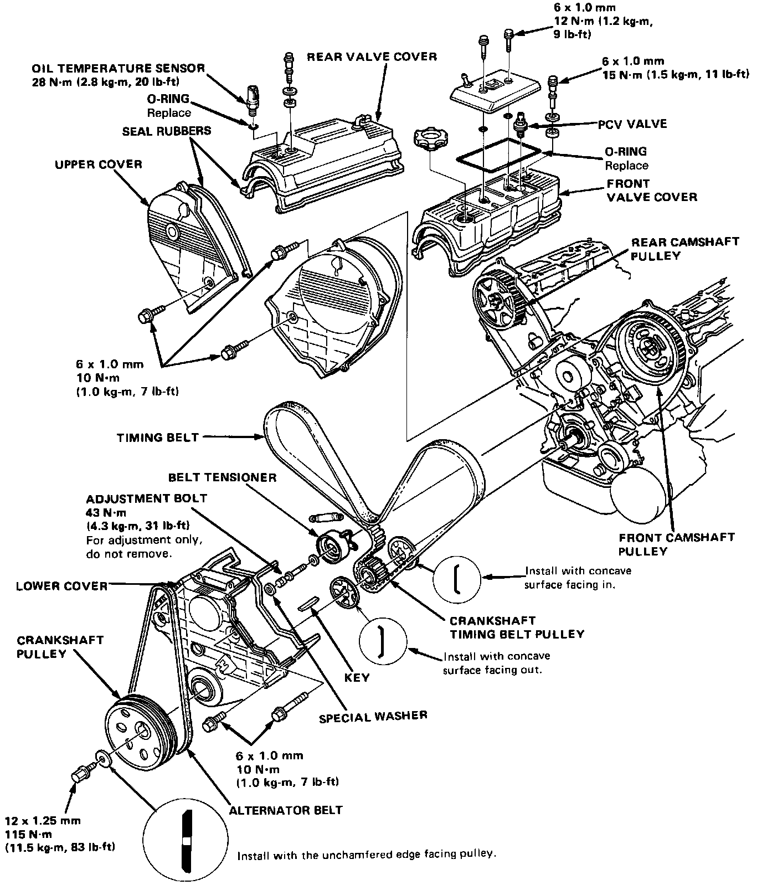
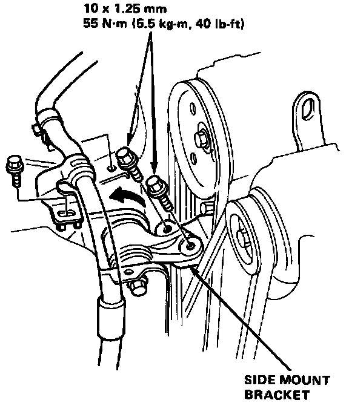
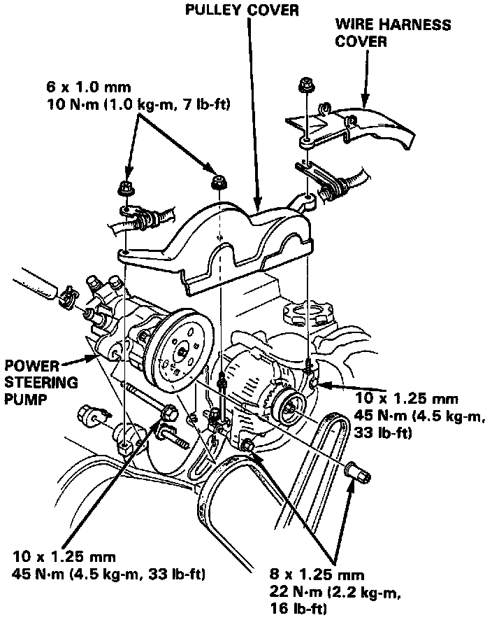
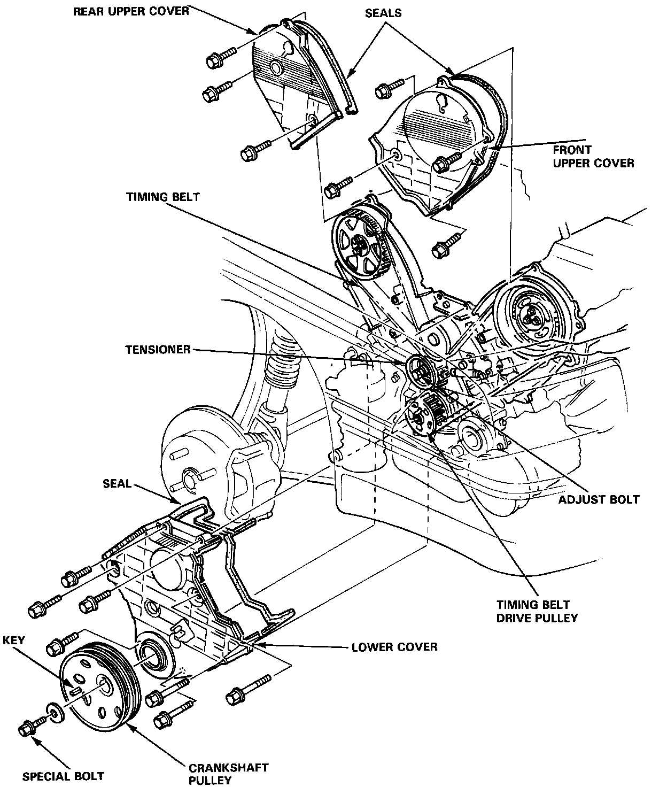
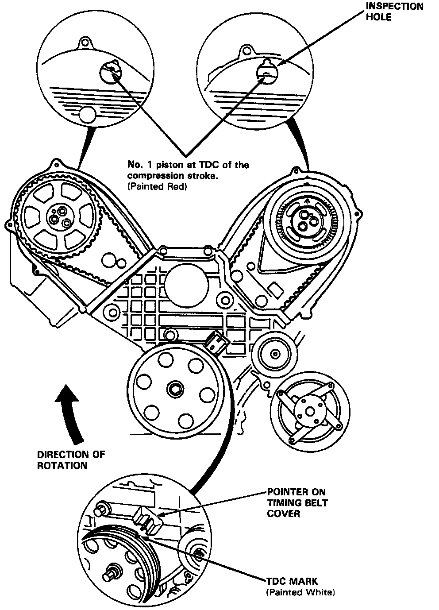
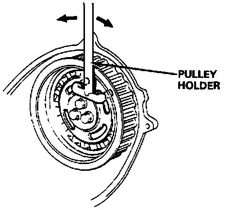
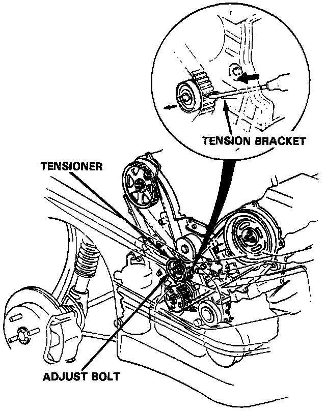

Timing Belt: Service and Repair
Timing Belt / Illustrated Index:

Replacement
1. Remove the pulley cover and harness cover from above the timing belt upper cover.
2. Remove the engine sub-harness clamp.

3. Remove engine support bolts, loosen the side mount rubber, and raise the side mount bracket.
CAUTION: Use a chain hoist to support the engine.
4. Remove lower splash guard.
5. Loosen the air conditioning idle pulley adjusting bolt, and remove the air conditioning compressor belt.
6. Remove the alternator adjusting bolt and the mounting bolt, and then remove the alternator and the belt.

7. Remove the power steering pump adjusting bolt and the mounting bolt, and then remove the power steering pump and the belt.
8. After installation, adjust the tension of each belt.

9. Remove the front and rear upper covers.
10. Remove the special bolt then remove the crankshaft pulley.
11. Remove the lower cover.
12. Loosen the adjust bolt then remove the timing belt.
13. The installation procedure is the reverse of the removal procedure. Only the key points are described here.
NOTE:
- Position crankshaft before installing the belt.
- Refer to Charging System for alternator belt adjustment.
- Refer to Steering System, for power steering pump belt adjustment.
- Refer to Heating and Air Conditioning, for air conditioning compressor belt adjustment.
- Mark direction of rotation before removing.

* Positioning The Crankshaft Before Installing Timing Belt
CAUTION: When installing the timing belt. advance the crankshaft pulley by 15° from No. 1 cylinder compression TDC. After adjusting the front and rear camshaft pulleys to No. 1 cylinder compression TDC, return the crankshaft pulley by about 15° again to adjust TDC.
14. Remove all spark plugs.
15. Advance the crankshaft by about 15° from No. 1 cylinder compression TDC. After adjusting the front and rear camshaft pulleys to No. 1 cylinder compression TDC, return the crankshaft pulley by about 15° again to adjust the TDC.

Use pulley holder to rotate the driven pulley.
16. Fix the adjust bolt with the timing belt tensioner at the belt loosening position.

- Push the tensioner bracket with a flat blade screwdriver to loosen belt tension.
- Do not push on the belt.
17. Install the timing belt.
- Install the belt in the following sequence: crankshaft pulley, front camshaft pulley, water pump pulley, tensioner and rear camshaft pulley.
- For easy installation, advance the rear camshaft pulley by about a half tooth from the TDC position.
18. Loosen the adjust bolt, and retighten it after tensioning the belt.
19. Rotate the crankshaft about 5 or 6 turns clockwise so that the belt may fit in position on the pulleys.
20. Carry out timing belt tension adjustment.